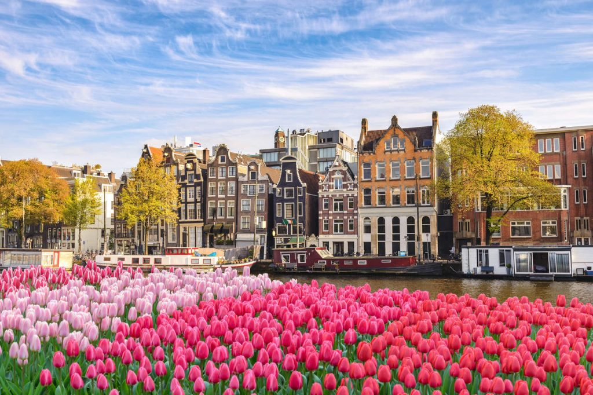
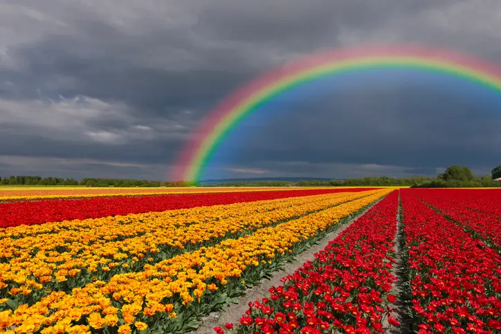

Primavera:
As paisagens enchem-se de cores, deixando ruas, campos, parques e jardins com o aspecto alegre e vívido. "
Essa estação do ano sucede o inverno e precede o verão. A primavera, assim como as demais estações do ano, não
ocorre simultaneamente nos dois hemisférios.
Em cada um deles, ela se inicia em uma data específica.
A primavera é considerada a estação do ano mais agradável para alguns, devido a suas temperaturas amenas e ao
aumento da umidade do ar que lhe são característicos.
A floração, ou desabrochamento das flores, modifica a paisagem, tornando-a mais alegre e contemplativa.
Muitas flores desabrocham no período da primavera.
Isso se deve a um conjunto de fatores, como o aumento gradativo das temperaturas e ao o regime de chuvas, que se
intensifica nesse período.
Os animais também apresentam comportamentos específicos nessa estação.
Muitos tendem a sair do seu período de hibernação.
Há mudança também no comportamento de animais polinizadores, como os beija-flores e as abelhas.
Devido ao florescimento de algumas espécies, esses animais aumentam a sua atividade, interferindo
significativamente no ciclo reprodutivo dos vegetais.
Algumas Flores que se Destacam na Primavera:
Equinócio de Primavera:
O início da primavera é marcado pelo equinócio de primavera.Ambiente Urbano na Primavera
Ambiente Rural na Primavera
